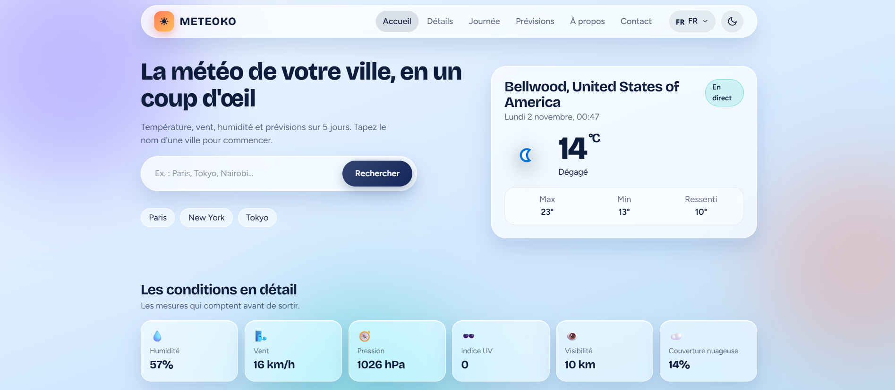

My Portfolio
From web development to scientific modeling, discover the projects where I turn ideas into practical solutions.

Personal Portfolio
A personal website showcasing my background, skills, projects, and ambitions as a developer.
Web Development
METEOKO
A weather web application powered by WeatherAPI.com, providing real-time conditions, forecasts, and weather information through a simple interface.
Weather API · Frontend
Ticket Sales Platform
A user-friendly web interface designed to present events and simplify the ticket purchasing experience.
Frontend Development
Phonebook Database
A database design project focused on organizing personnel information and managing employee records.
Database Design
Solar Data Collection
Software developed to collect and visualize MT-5 solar-panel data, connecting programming with a technical application.
Software Development
Mug Modeling Project
A C# software project connected to KOMPAS-3D, combining parameter-based modeling and automated technical design.
3D Modeling · C#
Hydroxyapatite Hardness Model
A numerical study using COMSOL Multiphysics to investigate the influence of porosity on ceramic hardness through finite element modeling.
Scientific Modeling · FEM View project